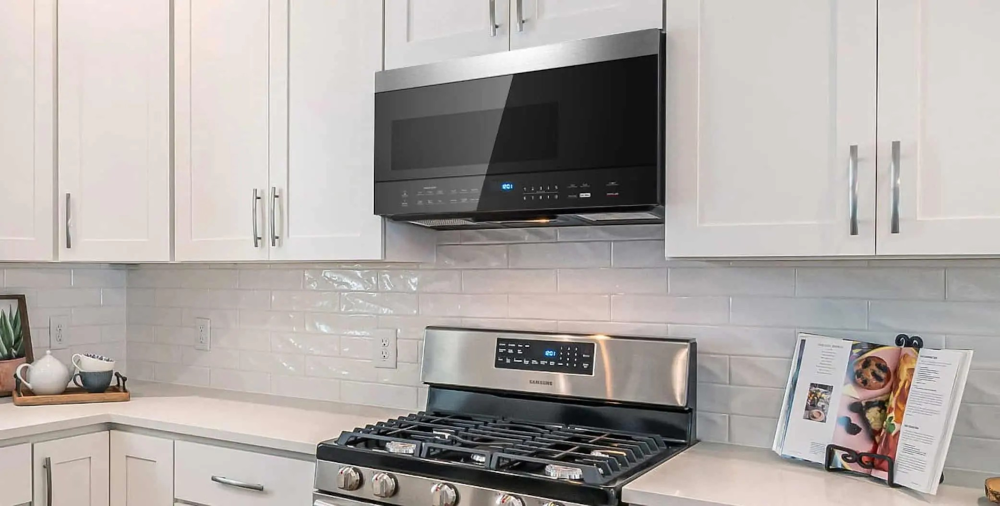
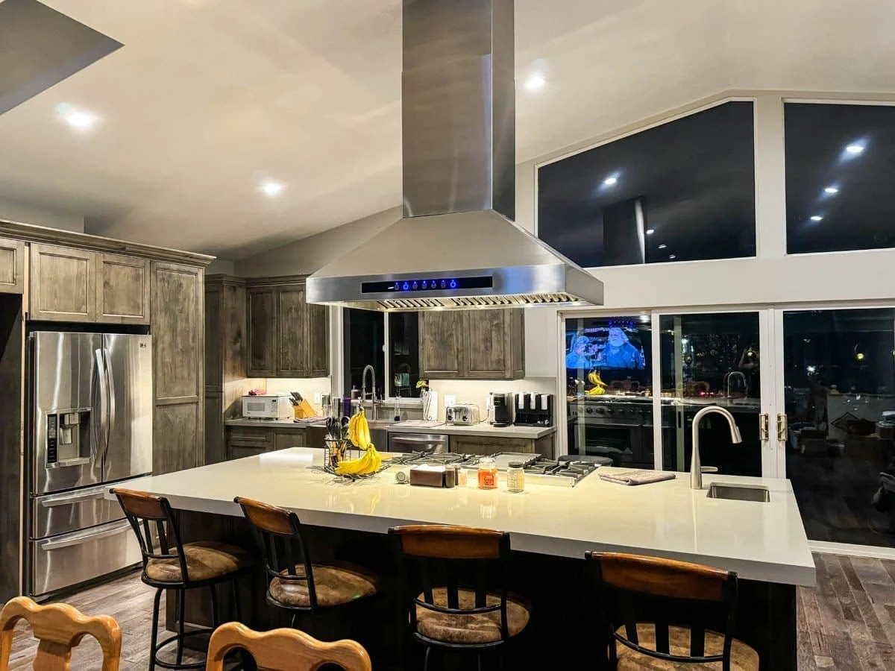

The over-the-range microwave is one of the most successful appliance sales stories of the last thirty years. It saves counter space. It coordinates with the range below it. It comes with a fan. Builders love it because it covers the ventilation checkbox without requiring any ductwork. Homeowners buy it because it makes sense in the showroom.
The fan recirculates greasy, smoky air through a charcoal filter and pushes it back into the kitchen. The house smells like whatever you cooked for the next twelve to twenty-four hours. The filter traps some grease. It does nothing about moisture, heat, or combustion byproducts. This is not a ventilation system. It is a microwave with a fan.
This is the most common kitchen ventilation situation in America — and most homeowners don't know it until they're planning a kitchen remodel and someone finally explains what they've been living with.
What's actually in American kitchens —
and what it means for the air you breathe.
That's the share of households that actually run their range hood while cooking — even in homes that have a real one. Most people have some form of ventilation over their stove. Most of them don't turn it on, because it's loud, because it seems like overkill for everyday cooking, or because they never developed the habit. The air quality consequences are real regardless of whether the hood is running.
Rocky Mountain Institute analysis, 2023Stanford University researchers found that gas stoves increase long-term indoor NO2 exposure by an average of 4.0 parts per billion — roughly 75% of the World Health Organization's safe annual guideline — in homes with normal cooking patterns. In homes under 800 square feet, residents experience four times the NO2 concentration of those in homes over 3,000 square feet, simply because there's less volume to dilute the emissions. The gas stove is not inherently dangerous. An unventilated gas stove in a tight, modern kitchen is a different conversation.
Electric and induction cooktops produce fewer combustion byproducts — but they still generate grease particulates, moisture, and cooking odors that accumulate in cabinets, on surfaces, and in the air without adequate exhaust. Ventilation is not a gas-stove-only problem.

The over-the-range microwave is in roughly half of American homes. Most are recirculating — filtering air through a charcoal filter and pushing it back into the kitchen. That is not ventilation.
Ducted vs recirculating —
the only distinction that actually matters.
Every kitchen ventilation conversation starts with one question: does the air go outside, or does it come back into the kitchen? Everything else — brand, CFM rating, hood style — is secondary to this distinction.
Ducted ventilation moves air from above the cooking surface through ductwork to the exterior of the house. Grease, moisture, heat, odors, and combustion byproducts leave the building. This is what ventilation means. A properly sized, properly installed ducted hood is the only solution to the lingering-smell problem.
Recirculating ventilation pulls air through filters — typically a metal mesh grease filter and a charcoal odor filter — and returns it to the kitchen. Grease is captured in the mesh filter. Some odors are reduced by the charcoal filter. Moisture, heat, and combustion byproducts are not removed. They go back into the kitchen. Recirculating systems are better than nothing — but they are not a substitute for ducted ventilation in any kitchen where real cooking happens.
"A recirculating hood over a gas range is a charcoal filter between you and your combustion byproducts. The air isn't going anywhere. It's going back into your kitchen."
The recirculating system exists because ductwork costs money and requires planning. Running a duct from an interior kitchen through a wall or ceiling to the exterior is a construction task — it requires cutting through finished surfaces, routing around framing, and installing an exterior cap with a backdraft damper. In a remodel, it is a reasonable job. In a finished home with no existing duct path, it is a significant one. Builders and installers default to recirculating because it is faster and cheaper. The homeowner pays for that shortcut in air quality for the life of the kitchen.
CFM — what the number means
and what you actually need.
CFM stands for cubic feet per minute — the volume of air the hood moves when running. It is the primary performance specification for any ventilation system and the number most often misunderstood in a showroom conversation.
The general residential guideline is to move the air in your kitchen approximately 15 times per hour. For a standard 10 x 12 kitchen with 9-foot ceilings, that works out to roughly 270 CFM as a minimum. Most kitchen designers use a simpler rule of thumb: 100 CFM per 10,000 BTUs of gas burner output, or for electric ranges, approximately 100 CFM per linear foot of cooking surface.
A standard gas range runs 40,000 to 60,000 BTUs total across all burners. That puts the ventilation requirement at 400 to 600 CFM for adequate coverage during normal cooking. A pro-style range — Wolf, Viking, BlueStar — can run 100,000 BTUs or more. The 600 CFM hood that came with the kitchen is meaningfully undersized for the 48-inch pro range the homeowner installed five years later.
The over-the-range microwave fan typically runs at 200 to 400 CFM — on the low end of what a modest gas range requires, and well below what's needed for high-heat cooking. Even a ducted OTR microwave at its maximum CFM is a compromised ventilation solution over anything above a basic electric range.
Hood types — what each one is
and where it belongs.

A wall-mount ducted hood is the most effective and most straightforward ventilation solution for a range against a wall. The duct runs straight up through the cabinet and out through the soffit or ceiling.
Wall-Mount Ducted Hood
Mounted against a wall above a range or cooktop, ducted to the exterior through the wall or ceiling. The most effective residential ventilation solution and the most straightforward to install in a kitchen remodel. The duct run is typically short and direct. Available in under-cabinet profile for lower ceilings or chimney-style for standard and high ceilings.
This is the right solution for any range against a wall where ductwork can reach the exterior. If you are remodeling a kitchen and the range is staying on an exterior wall — or a wall adjacent to an attic or exterior — this is the answer.
Island Hood
Suspended from the ceiling above an island cooktop. Requires ductwork routed through the ceiling and out through the roof or an exterior wall — a more complex duct path than a wall-mount installation. Island hoods need to be larger than wall-mount equivalents for the same cooktop, because smoke rising from an island has no wall to contain it and can drift in any direction before the hood captures it.
Size up significantly: an island hood should extend at least 6 inches beyond the cooktop on all sides. CFM requirements for island installations are higher than for equivalent wall cooktops for the same reason. This is the right solution for an island cooktop where ceiling height and design allow for an overhead hood.
Downdraft Ventilation
Downdraft systems pull cooking air downward through vents at or behind the cooktop, routing it through ductwork beneath the floor or through the cabinet base to the exterior. They are the design-forward alternative to an island hood — no overhead fixture, clear sightlines, clean aesthetic — and they work. With the right planning, a properly specified downdraft system handles everyday cooking on an island cooktop effectively.
The honest limitations: downdraft systems work against physics. Heat and steam rise. Pulling them downward requires more fan power to achieve equivalent capture, and tall pots can defeat the system by lifting steam above the vent intake. For high-heat cooking — searing, deep frying, high-BTU gas burners — a downdraft system requires a higher CFM rating than the equivalent overhead hood to achieve comparable performance. The physics don't change, but a well-specified system compensates for them.
The planning requirement is non-negotiable. The ductwork for a downdraft system runs beneath the floor or through the island cabinet base to the exterior. On a slab foundation, this means a dedicated conduit run must be planned and installed before the concrete is poured or the floor is finished. In a wood-frame floor, the duct path runs between joists. Either way, this decision must happen at rough-in — not after the island is built and the floors are finished. A downdraft retrofit in a completed kitchen is a significant construction project. A downdraft installed during a kitchen remodel is a straightforward one.
Built-In Insert Hood
A liner or insert hood is the ventilation component only — a blower unit installed inside a custom or semi-custom hood enclosure built by the cabinetmaker. The homeowner or designer specifies the visual enclosure; the insert provides the performance. Common in high-end kitchen remodels where the hood is a design element — stone, wood, plaster — rather than a stainless steel appliance.
Performance is entirely dependent on the insert specified — inserts are available from 400 CFM to 1,200+ CFM. The critical requirement is that the enclosure be sized to allow adequate airflow into the hood opening. A beautiful custom hood built too tight around an undersized opening chokes airflow regardless of the blower's rated CFM.

An island hood needs to be sized larger than a wall-mount hood for the same cooktop. With no wall to contain rising smoke, the hood canopy needs to extend well beyond the cooking surface on all sides.
The makeup air problem —
the thing nobody mentions before you buy a pro range.
Here is the conversation that should happen before any kitchen remodel involving a high-powered range hood — and almost never does.
Air is a zero-sum system. When your range hood exhausts air from the kitchen, that air has to be replaced from somewhere. In older, leaky homes, replacement air infiltrates through gaps around windows, doors, and penetrations — the house breathes in naturally to compensate. In modern, energy-efficient, well-sealed homes, this doesn't happen. The hood creates negative pressure. Performance drops. Doors become hard to open. And in homes with gas appliances — a furnace, a water heater, a gas fireplace — a depressurized house can backdraft combustion gases from those appliances into the living space. Carbon monoxide is one of those gases.
The International Residential Code is direct about this: any hood capable of exhausting more than 400 CFM must be provided with dedicated makeup air at approximately the same rate. The makeup air system — a powered damper that opens when the hood runs, supplying outdoor air to replace what's being exhausted — is a code requirement in most jurisdictions for any hood above the 400 CFM threshold.
This matters because 400 CFM is not a high-end specification. It is the minimum for a standard gas range with average burner output. Anyone who has purchased or is considering a pro-style range — Wolf, Viking, BlueStar, Thermador — and paired it with a hood rated at 600, 900, or 1,200 CFM needs a makeup air system. Most of them don't have one. Most of them were never told they needed one.
What to plan for in a kitchen remodel —
the decisions that can't happen after the walls close.
Ventilation is the category of kitchen decision most often deferred until it's expensive to fix. The duct path, the hood type, the makeup air provision — all of these are cheap to address during a remodel and costly to address afterward. Here is what needs to be decided before rough-in.
Before the walls close — ventilation decisions at rough-in
- Decide on hood type before the framing is finished. Wall-mount, island, downdraft, and insert all require different rough-in conditions. The duct path for a wall-mount hood is different from a ceiling penetration for an island hood, which is entirely different from a below-floor run for a downdraft. This decision drives framing, not the other way around.
- Specify smooth metal ductwork — never flexible. Flexible accordion duct is easier to install and significantly reduces airflow. Every foot of flexible duct and every unnecessary elbow costs CFM. Specify 6-inch or 8-inch round smooth-wall galvanized duct, minimize elbows, and keep the run as short and direct as possible to the exterior cap.
- Plan the exterior cap location. The duct needs to terminate at an exterior wall cap or roof cap with a backdraft damper. On a two-story house with the kitchen on the first floor, this may mean a long run through the second floor ceiling to the roof — or a shorter run through an exterior wall if the kitchen is on an outside wall. Identify the path before framing is complete.
- For island cooktops with downdraft: the duct path goes in now or not at all. On a slab foundation, this means a conduit sleeve in the concrete before the pour. On a wood-frame floor, the duct route between joists is planned and cleared before subfloor goes down. There is no good retrofit option for a downdraft duct through a finished slab or a finished floor system.
- If the hood exceeds 400 CFM, plan for makeup air. A makeup air damper — a motorized vent that opens when the hood runs — needs a location, a duct penetration, and an electrical connection. These are simple to provide during rough-in and disruptive to add after. If there is any chance the kitchen will include a pro-style range, plan the makeup air provision now and decide whether to activate it when the range is selected.
- Size the hood to the range, not the opening. The hood should be specified based on the BTU output of the range being installed, not the width of the existing opening or the size that fits the cabinet layout. If a pro-style range is going in, a 400 CFM hood is undersized regardless of how well it fits the space.
The honest bottom line
Most American kitchens are under-ventilated. The over-the-range microwave handles light cooking in a small space and nothing beyond that. The recirculating hood over a gas range is a better option than an OTR microwave — and still not ventilation in any meaningful sense. The ducted wall-mount hood, properly sized and properly installed, is the solution that every kitchen with real cooking deserves.
The ventilation conversation is the one most often skipped in a kitchen remodel because the showroom focuses on surfaces and appliances. A kitchen designer who doesn't ask about hood type, duct path, and makeup air before the layout is set is designing around the wrong constraints. The ventilation system is infrastructure. It needs to be decided first — before the hood style, before the cabinet layout, and well before the countertop.
If you're planning a kitchen remodel and haven't had the ventilation conversation yet, have it before anything else is specified. The duct path is much easier to route through an open wall than a finished one.